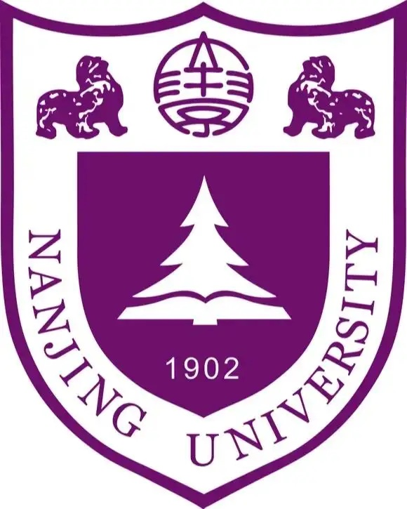

Jan, 2025 — present
Skild AI
Member of Technical Staff
San Mateo, California
Festina lente.
Hi there! I am a Member of Technical Staff at Skild AI, working on robotic foundation models. In Fall 2026, I will join Stanford University as a Computer Science PhD student.
Previously, I received my M.S. in Machine Learning from Carnegie Mellon University, where I worked with Prof. Ruslan Salakhutdinov, Prof. Deepak Pathak, and Murtaza Dalal. Prior to that, I completed my B.S. in Computer Science at Nanjing University, advised by Prof. Xiangyu Yue and Prof. Lin Shao.
I will join Stanford University as a CS PhD student this September.
LocoFormer was selected as a Best Paper Award Finalist at CoRL 2025.
Started my position at Skild AI. ManipGen was accepted to ICRA 2025.
SoftMAC was accepted to IROS 2024.
Non-Adversarial Backdoor was accepted to ICCV 2023.
SelectiveKD was accepted to AAAI 2023.
Started an internship at ByteDance AI Lab.
* denotes equal contribution; only first and co-first authored papers are listed.

Conference reviewer: CVPR (2024, 2025), ICRA (2025), CoRL (2025), AAAI (2026).
My Chinese name (surname first) is 刘闵. I am from Yangzhou, and have also lived in Nanjing, Shanghai, Hong Kong, Pittsburgh, and San Mateo.